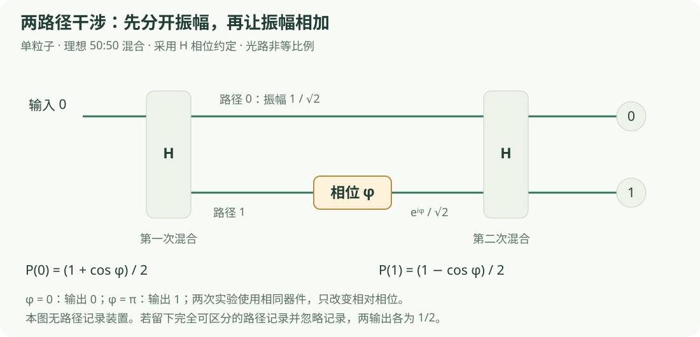

Q1｜从实验认识量子态
先修：第 01 章：够用而不跳步的数学工具 。本章先从可重复实验建立“制备—变换—测量”的语言，再把它写成二维向量。第一次阅读可先走 §1、§2.1–2.2、§3–5：每个结论都有直接的概率或计数例子。§2.3 用密度矩阵解释部分 路径记录，适合读过双比特 与密度矩阵 后回看；暂时跳过它，不妨碍理解本章的理想实验。下一步可读第 02 章：单量子比特 。
1. 状态首先是一套可检验的预测
一次量子实验至少要说清三件事：
制备 ：怎样让每一轮实验从同一操作条件开始；变换 ：系统在制备与测量之间经过什么器件或演化；测量 ：记录哪些互斥结果，以及各结果在许多次重复中出现多频繁。
这里的“同一制备”不是拿同一个粒子反复读取，而是按同一操作流程制备许多轮。单轮可能只得到一个探测器点击；量子态则汇总这套制备在各种允许测量下的概率预测。它不是探测器屏幕上的一个光点，也不只是“我们暂时不知道答案”的代称。
先看一个只有两条路径的系统。取正交归一基
∣ 0 ⟩ = [ 1 0 ] , ∣ 1 ⟩ = [ 0 1 ] ,
|0\rangle=
\begin{bmatrix}1\\0\end{bmatrix},
\qquad
|1\rangle=
\begin{bmatrix}0\\1\end{bmatrix},
∣0 ⟩ = [ 1 0 ] , ∣1 ⟩ = [ 0 1 ] , 分别表示粒子处于上、下路径。一般纯态写成
∣ ψ ⟩ = α ∣ 0 ⟩ + β ∣ 1 ⟩ , α , β ∈ C .
|\psi\rangle=\alpha|0\rangle+\beta|1\rangle,
\qquad \alpha,\beta\in\mathbb C.
∣ ψ ⟩ = α ∣0 ⟩ + β ∣1 ⟩ , α , β ∈ C . 若直接测量路径，Born 规则给出
p ( 0 ) = ∣ α ∣ 2 , p ( 1 ) = ∣ β ∣ 2 .
p(0)=|\alpha|^2,
\qquad
p(1)=|\beta|^2.
p ( 0 ) = ∣ α ∣ 2 , p ( 1 ) = ∣ β ∣ 2 . 两种结果穷尽所有可能，所以总概率为 1：
∣ α ∣ 2 + ∣ β ∣ 2 = 1.
|\alpha|^2+|\beta|^2=1.
∣ α ∣ 2 + ∣ β ∣ 2 = 1. 这就是态矢量的归一化条件。注意逻辑顺序：线性代数告诉我们怎样算内积和模平方；Born 规则是把模平方与实验概率联系起来的物理公设 ，不是从“向量必须归一化”单独证明出来的。归一化只是保证采用 Born 规则后总概率为 1。Born 在 1926 年的散射研究中提出波函数的概率解释；现代教材把它列为量子力学公设，而不是线性代数定理。Born 原始论文记录 和 MIT 的量子力学公设讲义 分别提供历史来源和现代课程表述。
算例：先归一化，再算概率
设某个未归一化向量为
∣ v ⟩ = 3 ∣ 0 ⟩ + i ∣ 1 ⟩ .
|v\rangle=\sqrt3|0\rangle+i|1\rangle.
∣ v ⟩ = 3 ∣0 ⟩ + i ∣1 ⟩ . 它的范数平方为
⟨ v ∣ v ⟩ = ∣ 3 ∣ 2 + ∣ i ∣ 2 = 3 + 1 = 4.
\langle v|v\rangle=|\sqrt3|^2+|i|^2=3+1=4.
⟨ v ∣ v ⟩ = ∣ 3 ∣ 2 + ∣ i ∣ 2 = 3 + 1 = 4. 因此对应的归一化态是
∣ ψ ⟩ = ∣ v ⟩ 2 = 3 2 ∣ 0 ⟩ + i 2 ∣ 1 ⟩ .
|\psi\rangle=\frac{|v\rangle}{2}
=\frac{\sqrt3}{2}|0\rangle+\frac i2|1\rangle.
∣ ψ ⟩ = 2 ∣ v ⟩ = 2 3 ∣0 ⟩ + 2 i ∣1 ⟩ . 直接测量路径得到
p ( 0 ) = ∣ 3 2 ∣ 2 = 3 4 , p ( 1 ) = ∣ i 2 ∣ 2 = 1 4 .
p(0)=\left|\frac{\sqrt3}{2}\right|^2=\frac34,
\qquad
p(1)=\left|\frac i2\right|^2=\frac14.
p ( 0 ) = 2 3 2 = 4 3 , p ( 1 ) = 2 i 2 = 4 1 . 概率来自复振幅的模平方，不是把振幅普通平方；( i / 2 ) 2 = − 1 / 4 (i/2)^2=-1/4 ( i /2 ) 2 = − 1/4
概率预测怎样与实验计数相接
Born 规则预测的是在相同条件下重复制备、重复测量时的分布，不保证一小批实验恰好等于理论比例。若上例独立重复 N = 400 N=400 N = 400
E [ n 0 ] = N p = 400 × 3 4 = 300 ,
\mathbb E[n_0]=Np=400\times\frac34=300,
E [ n 0 ] = Np = 400 × 4 3 = 300 , 计数的标准差是
sd ( n 0 ) = N p ( 1 − p ) = 400 × 3 4 × 1 4 = 75 ≈ 8.66.
\operatorname{sd}(n_0)
=\sqrt{Np(1-p)}
=\sqrt{400\times\frac34\times\frac14}
=\sqrt{75}\approx8.66.
sd ( n 0 ) = Np ( 1 − p ) = 400 × 4 3 × 4 1 = 75 ≈ 8.66. 因此某批得到 293 次路径 0 并不反驳 p ( 0 ) = 3 / 4 p(0)=3/4 p ( 0 ) = 3/4
2. 两路径干涉：先加振幅，再取模平方
Mach–Zehnder 干涉仪有两个平衡分束器、两条路径和两个输出探测器。把单粒子逐个送入，只要两条路径保持相干，许多轮累积后仍会出现随相位变化的输出统计。MIT Quantum Physics I 的课程讲义 以这一装置说明：单粒子态在两条路径上叠加，第二个分束器处的两个路径振幅发生干涉。
2.1 先声明分束器的相位约定
真实光学分束器的反射振幅常带固定的 i i i
B = 1 2 [ 1 1 1 − 1 ] .
B=\frac1{\sqrt2}
\begin{bmatrix}
1&1\\
1&-1
\end{bmatrix}.
B = 2 1 [ 1 1 1 − 1 ] . 这个 B B B H H H
它满足 B † B = I B^\dagger B=I B † B = I
U ϕ = [ 1 0 0 e i ϕ ] .
U_\phi=
\begin{bmatrix}
1&0\\
0&e^{i\phi}
\end{bmatrix}.
U ϕ = [ 1 0 0 e i ϕ ] . 端口 0 入射时，三个步骤分别是
∣ 0 ⟩ → B ∣ 0 ⟩ + ∣ 1 ⟩ 2 → U ϕ ∣ 0 ⟩ + e i ϕ ∣ 1 ⟩ 2 → B ∣ ψ o u t ⟩ .
|0\rangle
\xrightarrow{B}
\frac{|0\rangle+|1\rangle}{\sqrt2}
\xrightarrow{U_\phi}
\frac{|0\rangle+e^{i\phi}|1\rangle}{\sqrt2}
\xrightarrow{B}
|\psi_{\rm out}\rangle.
∣0 ⟩ B 2 ∣0 ⟩ + ∣1 ⟩ U ϕ 2 ∣0 ⟩ + e i ϕ ∣1 ⟩ B ∣ ψ out ⟩ . 逐项乘矩阵：
∣ ψ o u t ⟩ = 1 2 [ 1 + e i ϕ 1 − e i ϕ ] .
|\psi_{\rm out}\rangle
=\frac12
\begin{bmatrix}
1+e^{i\phi}\\
1-e^{i\phi}
\end{bmatrix}.
∣ ψ out ⟩ = 2 1 [ 1 + e i ϕ 1 − e i ϕ ] . 因此到达两个探测器的振幅为
A 0 = 1 + e i ϕ 2 , A 1 = 1 − e i ϕ 2 .
A_0=\frac{1+e^{i\phi}}2,
\qquad
A_1=\frac{1-e^{i\phi}}2.
A 0 = 2 1 + e i ϕ , A 1 = 2 1 − e i ϕ . 先加振幅，再取模平方。例如
P 0 = ∣ A 0 ∣ 2 = 1 4 ( 1 + e − i ϕ ) ( 1 + e i ϕ ) = 1 4 ( 2 + 2 cos ϕ ) = 1 + cos ϕ 2 .
\begin{aligned}
P_0
&=|A_0|^2\\
&=\frac14(1+e^{-i\phi})(1+e^{i\phi})\\
&=\frac14(2+2\cos\phi)\\
&=\frac{1+\cos\phi}{2}.
\end{aligned}
P 0 = ∣ A 0 ∣ 2 = 4 1 ( 1 + e − i ϕ ) ( 1 + e i ϕ ) = 4 1 ( 2 + 2 cos ϕ ) = 2 1 + cos ϕ . 同理
P 1 = 1 − cos ϕ 2 , P 0 + P 1 = 1.
P_1=\frac{1-\cos\phi}{2},
\qquad P_0+P_1=1.
P 1 = 2 1 − cos ϕ , P 0 + P 1 = 1. 
打开原尺寸图 ↗
几个相位点可直接核对：
图和以上公式都限定为：理想无损元件、平衡分束器、没有任何装置留下路径记录。实验中的损耗、不完全可见度和探测器效率会改变计数，但不改变“可区分路径信息会削弱干涉”这一结构。
这张振幅表还显示了概率表没有直接展示的信息。ϕ = π / 2 \phi=\pi/2 ϕ = π /2
∣ 1 + i 2 ∣ 2 = ∣ 1 − i 2 ∣ 2 = 1 2 .
\left|\frac{1+i}{2}\right|^2
=\left|\frac{1-i}{2}\right|^2
=\frac12.
2 1 + i 2 = 2 1 − i 2 = 2 1 . ϕ = 0 \phi=0 ϕ = 0 ϕ = π \phi=\pi ϕ = π
2.2 先用输出计数区分三种实验
“粒子经过两条路径”“测了路径但没看结果”“已知路径结果”对应不同预测。
固定相位差 ϕ = 0 \phi=0 ϕ = 0 期望次数 ，不是保证每组恰好发生的次数：
最后一行的“每组约 50 轮”是因为第一道平衡分束器把路径分成等权两支；两组重新相加仍是约 ( 50 , 50 ) (50,50) ( 50 , 50 )
2.3 进阶回看：部分路径记录怎样削弱干涉
下面会提前用到密度矩阵，只需先掌握几条最小规则。纯态 ∣ ψ ⟩ |\psi\rangle ∣ ψ ⟩ ρ = ∣ ψ ⟩ ⟨ ψ ∣ \rho=|\psi\rangle\langle\psi| ρ = ∣ ψ ⟩ ⟨ ψ ∣ p j p_j p j ∣ ψ j ⟩ |\psi_j\rangle ∣ ψ j ⟩ ρ = ∑ j p j ∣ ψ j ⟩ ⟨ ψ j ∣ \rho=\sum_jp_j|\psi_j\rangle\langle\psi_j| ρ = ∑ j p j ∣ ψ j ⟩ ⟨ ψ j ∣ U U U U ρ U † U\rho U^\dagger U ρ U † ∣ m ⟩ |m\rangle ∣ m ⟩ ⟨ m ∣ ρ ∣ m ⟩ \langle m|\rho|m\rangle ⟨ m ∣ ρ ∣ m ⟩
情形 A：不测路径，也没有路径记录。 第二个分束器接收相干态
∣ ψ ϕ ⟩ = ∣ 0 ⟩ + e i ϕ ∣ 1 ⟩ 2 ,
|\psi_\phi\rangle
=\frac{|0\rangle+e^{i\phi}|1\rangle}{\sqrt2},
∣ ψ ϕ ⟩ = 2 ∣0 ⟩ + e i ϕ ∣1 ⟩ , 两个路径对同一输出的振幅相加，得到随 ϕ \phi ϕ P 0 , P 1 P_0,P_1 P 0 , P 1
情形 B：装置留下路径记录，但随后丢弃记录。 设两条路径分别关联到归一化的装置或环境记录态 ∣ d 0 ⟩ , ∣ d 1 ⟩ |d_0\rangle,|d_1\rangle ∣ d 0 ⟩ , ∣ d 1 ⟩
∣ Ψ ⟩ = ∣ 0 ⟩ ∣ d 0 ⟩ + e i ϕ ∣ 1 ⟩ ∣ d 1 ⟩ 2 .
|\Psi\rangle
=\frac{|0\rangle|d_0\rangle+e^{i\phi}|1\rangle|d_1\rangle}{\sqrt2}.
∣Ψ ⟩ = 2 ∣0 ⟩ ∣ d 0 ⟩ + e i ϕ ∣1 ⟩ ∣ d 1 ⟩ . 把记录的重叠记为
γ = ⟨ d 1 ∣ d 0 ⟩ .
\gamma=\langle d_1|d_0\rangle.
γ = ⟨ d 1 ∣ d 0 ⟩ . 这个重叠因子可从联合态逐项看出：∣ Ψ ⟩ ⟨ Ψ ∣ |\Psi\rangle\langle\Psi| ∣Ψ ⟩ ⟨ Ψ∣
e − i ϕ 2 ∣ 0 ⟩ ⟨ 1 ∣ ⊗ ∣ d 0 ⟩ ⟨ d 1 ∣
\frac{e^{-i\phi}}2
|0\rangle\langle1|\otimes|d_0\rangle\langle d_1|
2 e − i ϕ ∣0 ⟩ ⟨ 1∣ ⊗ ∣ d 0 ⟩ ⟨ d 1 ∣ 在忽略记录自由度后，记录部分贡献 ⟨ d 1 ∣ d 0 ⟩ = γ \langle d_1|d_0\rangle=\gamma ⟨ d 1 ∣ d 0 ⟩ = γ 偏迹 。因此，粒子的密度矩阵是
ρ p a t h ( ϕ ) = 1 2 [ 1 γ e − i ϕ γ ∗ e i ϕ 1 ] .
\rho_{\rm path}(\phi)
=\frac12
\begin{bmatrix}
1&\gamma e^{-i\phi}\\
\gamma^*e^{i\phi}&1
\end{bmatrix}.
ρ path ( ϕ ) = 2 1 [ 1 γ ∗ e i ϕ γ e − i ϕ 1 ] . 这个式子显示，记录不是简单的“有”或“没有”。只有在两种记录态完全可区分 ，也就是理想模型中彼此正交、γ = 0 \gamma=0 γ = 0
ρ p a t h = 1 2 ∣ 0 ⟩ ⟨ 0 ∣ + 1 2 ∣ 1 ⟩ ⟨ 1 ∣ = I 2 .
\rho_{\rm path}
=\frac12|0\rangle\langle0|
+\frac12|1\rangle\langle1|
=\frac I2.
ρ path = 2 1 ∣0 ⟩ ⟨ 0∣ + 2 1 ∣1 ⟩ ⟨ 1∣ = 2 I . 第二个分束器后的非选择态为
B ρ p a t h B † = B I 2 B † = I 2 ,
B\rho_{\rm path}B^\dagger
=B\frac I2B^\dagger
=\frac I2,
B ρ path B † = B 2 I B † = 2 I , 所以两个输出始终各为 1 / 2 1/2 1/2 ϕ \phi ϕ
若记录只能部分区分，干涉只会减弱，不一定完全消失。把上面的矩阵乘以第二个分束器，可得
P 0 = 1 + Re ( γ e − i ϕ ) 2 , P 1 = 1 − Re ( γ e − i ϕ ) 2 .
P_0=\frac{1+\operatorname{Re}(\gamma e^{-i\phi})}{2},
\qquad
P_1=\frac{1-\operatorname{Re}(\gamma e^{-i\phi})}{2}.
P 0 = 2 1 + Re ( γ e − i ϕ ) , P 1 = 2 1 − Re ( γ e − i ϕ ) . 例如 γ = 0.6 \gamma=0.6 γ = 0.6 ϕ = 0 \phi=0 ϕ = 0 e − i ϕ = 1 e^{-i\phi}=1 e − i ϕ = 1 P 0 = ( 1 + 0.6 ) / 2 = 0.8 P_0=(1+0.6)/2=0.8 P 0 = ( 1 + 0.6 ) /2 = 0.8 P 1 = ( 1 − 0.6 ) / 2 = 0.2 P_1=(1-0.6)/2=0.2 P 1 = ( 1 − 0.6 ) /2 = 0.2 γ = 1 \gamma=1 γ = 1 γ = 0 \gamma=0 γ = 0 γ = 0 \gamma=0 γ = 0
还可以把“减弱多少”直接换成实验测得的明暗起伏。若 γ ≠ 0 \gamma\ne0 γ = 0 γ = ∣ γ ∣ e i δ \gamma=|\gamma|e^{i\delta} γ = ∣ γ ∣ e i δ ϕ \phi ϕ
P 0 ( ϕ ) = 1 + ∣ γ ∣ cos ( ϕ − δ ) 2 .
P_0(\phi)=\frac{1+|\gamma|\cos(\phi-\delta)}2.
P 0 ( ϕ ) = 2 1 + ∣ γ ∣ cos ( ϕ − δ ) . δ \delta δ ∣ γ ∣ |\gamma| ∣ γ ∣ ( 1 + ∣ γ ∣ ) / 2 (1+|\gamma|)/2 ( 1 + ∣ γ ∣ ) /2 ( 1 − ∣ γ ∣ ) / 2 (1-|\gamma|)/2 ( 1 − ∣ γ ∣ ) /2
V = P 0 , max − P 0 , min P 0 , max + P 0 , min = ∣ γ ∣ .
\mathcal V=\frac{P_{0,\max}-P_{0,\min}}{P_{0,\max}+P_{0,\min}}=|\gamma|.
V = P 0 , m a x + P 0 , m i n P 0 , m a x − P 0 , m i n = ∣ γ ∣. 例如 γ = 0.6 \gamma=0.6 γ = 0.6 P 0 P_0 P 0 0.2 0.2 0.2 0.8 0.8 0.8 0.6 0.6 0.6 Englert 的原始论文 进一步讨论了干涉可见度与路径信息之间的定量取舍。
情形 C：理想测量路径，并按记录分组。 这里假设测量能完全区分两条路径。若结果是上路，条件态为 ∣ 0 ⟩ |0\rangle ∣0 ⟩ ∣ 1 ⟩ |1\rangle ∣1 ⟩
B ∣ 0 ⟩ = ∣ 0 ⟩ + ∣ 1 ⟩ 2 , B ∣ 1 ⟩ = ∣ 0 ⟩ − ∣ 1 ⟩ 2 .
B|0\rangle=\frac{|0\rangle+|1\rangle}{\sqrt2},
\qquad
B|1\rangle=\frac{|0\rangle-|1\rangle}{\sqrt2}.
B ∣0 ⟩ = 2 ∣0 ⟩ + ∣1 ⟩ , B ∣1 ⟩ = 2 ∣0 ⟩ − ∣1 ⟩ . 因此每个条件子样本在两个输出端仍是各半。把两个子样本重新混合，当然也是各半。
阻挡一条路径又是另一种实验：它会吸收部分粒子，并改变存活样本的归一化，不能与“测量后丢弃结果”混为一谈。第 02 章会系统写出条件态与非选择态公式，第 05 章再完整介绍密度矩阵。
3. 全局相位与相对相位
把整个态乘同一个单位模复数不会改变任何测量概率。用实数相位角 θ g \theta_{\rm g} θ g
∣ ψ ′ ⟩ = e i θ g ∣ ψ ⟩ ,
|\psi'\rangle=e^{i\theta_{\rm g}}|\psi\rangle,
∣ ψ ′ ⟩ = e i θ g ∣ ψ ⟩ , 则对任意归一化测量向量 ∣ m ⟩ |m\rangle ∣ m ⟩
∣ ⟨ m ∣ ψ ′ ⟩ ∣ 2 = ∣ e i θ g ⟨ m ∣ ψ ⟩ ∣ 2 = ∣ ⟨ m ∣ ψ ⟩ ∣ 2 .
|\langle m|\psi'\rangle|^2
=|e^{i\theta_{\rm g}}\langle m|\psi\rangle|^2
=|\langle m|\psi\rangle|^2.
∣ ⟨ m ∣ ψ ′ ⟩ ∣ 2 = ∣ e i θ g ⟨ m ∣ ψ ⟩ ∣ 2 = ∣ ⟨ m ∣ ψ ⟩ ∣ 2 . e i θ g e^{i\theta_{\rm g}} e i θ g 全局相位 ，不代表新的纯态。
相对相位不同。两路径态
∣ ψ ϕ ⟩ = ∣ 0 ⟩ + e i ϕ ∣ 1 ⟩ 2
|\psi_\phi\rangle
=\frac{|0\rangle+e^{i\phi}|1\rangle}{\sqrt2}
∣ ψ ϕ ⟩ = 2 ∣0 ⟩ + e i ϕ ∣1 ⟩ 在路径基直接测量时总是各半，但第二个分束器把分量之间的相位差转换成 P 0 = ( 1 + cos ϕ ) / 2 P_0=(1+\cos\phi)/2 P 0 = ( 1 + cos ϕ ) /2
4. Stern–Gerlach：顺序筛选揭示互补基
Stern–Gerlach 实验让中性银原子束通过非均匀磁场。经典取向连续的图景会预期连续展宽；实际束流分成两个离散分量。原始实验确立的是磁矩方向量子化，后来才在现代量子力学中理解为银原子基态未配对电子所贡献的有效自旋二态。可参阅 Gerlach 与 Stern 1922 年论文的英译与原文出处 ，以及 Barton Zwiebach 在 MIT 8.05 对银原子、磁场梯度和顺序筛选的官方课程讲义 。
本节只采用理想自旋-1 / 2 1/2 1/2 z z z
S z = + ℏ 2 或 S z = − ℏ 2 ,
S_z=+\frac\hbar2
\quad\text{或}\quad
S_z=-\frac\hbar2,
S z = + 2 ℏ 或 S z = − 2 ℏ , 对应归一化态 ∣ z + ⟩ , ∣ z − ⟩ |z+\rangle,|z-\rangle ∣ z + ⟩ , ∣ z − ⟩
4.1 同方向连续筛选
让一束未偏振银原子先通过 S G z SG_z S G z z − z- z − z + z+ z + ∣ z + ⟩ |z+\rangle ∣ z + ⟩ S G z SG_z S G z
∣ ⟨ z + ∣ z + ⟩ ∣ 2 = 1 , ∣ ⟨ z − ∣ z + ⟩ ∣ 2 = 0.
|\langle z+|z+\rangle|^2=1,
\qquad
|\langle z-|z+\rangle|^2=0.
∣ ⟨ z + ∣ z + ⟩ ∣ 2 = 1 , ∣ ⟨ z − ∣ z + ⟩ ∣ 2 = 0. 若最初有 N N N N / 2 N/2 N /2 S G z SG_z S G z N / 2 N/2 N /2 z + z+ z +
4.2 插入正交方向筛选
沿 x x x z z z
∣ x + ⟩ = ∣ z + ⟩ + ∣ z − ⟩ 2 , ∣ x − ⟩ = ∣ z + ⟩ − ∣ z − ⟩ 2 .
|x+\rangle=\frac{|z+\rangle+|z-\rangle}{\sqrt2},
\qquad
|x-\rangle=\frac{|z+\rangle-|z-\rangle}{\sqrt2}.
∣ x + ⟩ = 2 ∣ z + ⟩ + ∣ z − ⟩ , ∣ x − ⟩ = 2 ∣ z + ⟩ − ∣ z − ⟩ . 反过来
∣ z + ⟩ = ∣ x + ⟩ + ∣ x − ⟩ 2 .
|z+\rangle=\frac{|x+\rangle+|x-\rangle}{\sqrt2}.
∣ z + ⟩ = 2 ∣ x + ⟩ + ∣ x − ⟩ . 因此已经制备为 ∣ z + ⟩ |z+\rangle ∣ z + ⟩ S G x SG_x S G x
p ( x + ∣ z + ) = ∣ ⟨ x + ∣ z + ⟩ ∣ 2 = 1 2 ,
p(x+|z+)=|\langle x+|z+\rangle|^2=\frac12,
p ( x + ∣ z + ) = ∣ ⟨ x + ∣ z + ⟩ ∣ 2 = 2 1 , p ( x − ∣ z + ) = ∣ ⟨ x − ∣ z + ⟩ ∣ 2 = 1 2 .
p(x-|z+)=|\langle x-|z+\rangle|^2=\frac12.
p ( x − ∣ z + ) = ∣ ⟨ x − ∣ z + ⟩ ∣ 2 = 2 1 . 若再挡住 x − x- x − x + x+ x + ∣ x + ⟩ |x+\rangle ∣ x + ⟩ S G z SG_z S G z
p ( z + ∣ x + ) = p ( z − ∣ x + ) = 1 2 .
p(z+|x+)=p(z-|x+)=\frac12.
p ( z + ∣ x + ) = p ( z − ∣ x + ) = 2 1 . 以最初 N N N
若起初有 8000 个原子，把每个分母明确写出来：第一道 z + z+ z + 8000 × ( 1 / 2 ) = 4000 8000\times(1/2)=4000 8000 × ( 1/2 ) = 4000 x + x+ x + 4000 个 中平均留下 4000 × ( 1 / 2 ) = 2000 4000\times(1/2)=2000 4000 × ( 1/2 ) = 2000 2000 个 中各占一半，故最终 z + z+ z + z − z- z − 1 / 2 1/2 1/2 z + z+ z + 1 / 2 1/2 1/2 1000 / 8000 = 1 / 8 1000/8000=1/8 1000/8000 = 1/8
这个顺序实验说明两点。第一，第一次 z + z+ z + x x x z + z+ z +
还要区分“筛选”与“不加选择地保留全部输出”。筛选 x + x+ x + x − x- x − ∣ x + ⟩ |x+\rangle ∣ x + ⟩ 理想化的非破坏式 安排，是让装置记录两束各自的 x x x z z z x x x S G z SG_z S G z z z z
“互补基”在这个二维例子中可精确定义：Z Z Z X X X
∣ ⟨ x s ∣ z t ⟩ ∣ 2 = 1 2 , s , t ∈ { + , − } .
|\langle x_s|z_t\rangle|^2=\frac12,
\qquad s,t\in\{+,-\}.
∣ ⟨ x s ∣ z t ⟩ ∣ 2 = 2 1 , s , t ∈ { + , − } . 在一个基中确定的态，到另一个基中测量时完全均匀。这不表示所有不同方向都只能给 1 / 2 1/2 1/2
5. 叠加不是“其实早已选好，只是我们不知道”
比较两个制备过程：
相干叠加 ：每轮都制备 ∣ x + ⟩ = ( ∣ z + ⟩ + ∣ z − ⟩ ) / 2 |x+\rangle=(|z+\rangle+|z-\rangle)/\sqrt2 ∣ x + ⟩ = ( ∣ z + ⟩ + ∣ z − ⟩) / 2 无知混合 ：随机装置以 1 / 2 1/2 1/2 ∣ z + ⟩ |z+\rangle ∣ z + ⟩ 1 / 2 1/2 1/2 ∣ z − ⟩ |z-\rangle ∣ z − ⟩
两种制备在 Z Z Z
改测 X X X
把混合态的 x + x+ x + ∣ z + ⟩ |z+\rangle ∣ z + ⟩ x + x+ x + 1 / 2 1/2 1/2 ∣ z − ⟩ |z-\rangle ∣ z − ⟩ 1 / 2 1/2 1/2
p m i x ( x + ) = 1 2 ∣ ⟨ x + ∣ z + ⟩ ∣ 2 ⏟ 1 / 2 + 1 2 ∣ ⟨ x + ∣ z − ⟩ ∣ 2 ⏟ 1 / 2 = 1 4 + 1 4 = 1 2 .
p_{\rm mix}(x+)
=\frac12\underbrace{\left|\langle x+|z+\rangle\right|^2}_{1/2}
+\frac12\underbrace{\left|\langle x+|z-\rangle\right|^2}_{1/2}
=\frac14+\frac14=\frac12.
p mix ( x + ) = 2 1 1/2 ∣ ⟨ x + ∣ z + ⟩ ∣ 2 + 2 1 1/2 ∣ ⟨ x + ∣ z − ⟩ ∣ 2 = 4 1 + 4 1 = 2 1 . 相干叠加每轮都制备 ∣ x + ⟩ |x+\rangle ∣ x + ⟩ ∣ ⟨ x + ∣ x + ⟩ ∣ 2 = 1 |\langle x+|x+\rangle|^2=1 ∣ ⟨ x + ∣ x + ⟩ ∣ 2 = 1 Z Z Z
用密度矩阵能看到差别来自哪里。相干叠加为
ρ s u p = ∣ x + ⟩ ⟨ x + ∣ = 1 2 [ 1 1 1 1 ] ,
\rho_{\rm sup}=|x+\rangle\langle x+|
=\frac12
\begin{bmatrix}
1&1\\
1&1
\end{bmatrix},
ρ sup = ∣ x + ⟩ ⟨ x + ∣ = 2 1 [ 1 1 1 1 ] , 随机混合为
ρ m i x = 1 2 ∣ z + ⟩ ⟨ z + ∣ + 1 2 ∣ z − ⟩ ⟨ z − ∣ = 1 2 [ 1 0 0 1 ] .
\rho_{\rm mix}
=\frac12|z+\rangle\langle z+|
+\frac12|z-\rangle\langle z-|
=\frac12
\begin{bmatrix}
1&0\\
0&1
\end{bmatrix}.
ρ mix = 2 1 ∣ z + ⟩ ⟨ z + ∣ + 2 1 ∣ z − ⟩ ⟨ z − ∣ = 2 1 [ 1 0 0 1 ] . 对角元给出 Z Z Z 课程讲义 从重复制备的系综出发，引入纯态投影与概率凸组合，支持这里的区分。
这也解释了为什么只看 Mach–Zehnder 中间两路各占一半还不够：相干态和路径混合有相同的路径计数，却在第二个分束器后给出不同结果。
6. “状态依赖制备信息”是什么意思
量子态的指派要依据已经知道的制备操作和可用记录。若筛选器报告 z + z+ z + ∣ z + ⟩ |z+\rangle ∣ z + ⟩
反过来，不同实验流程也可能产生同一个密度矩阵。若系统自身的所有测量统计都相同，就不能仅凭测这个系统断言它“真正来自”哪一种隐藏制备清单。状态是对指定系统、指定制备信息下可做预测的完整对象；本章不需要由此选择某一种量子诠释。
这句话也给出一个实用判断方法：不要问“这个态在某一基里究竟是哪一个标签”，而要问“给定制备记录，对下一种明确测量应预测什么概率”。改变基不是改变过去发生的制备，而是换一个实验问题。若两种候选描述只在计算基给出相同概率，还不能宣告它们相同；需要像前面的 X X X
7. 常见误解
“50% 加 50% 就是叠加。” 概率混合是密度矩阵的加权和；相干叠加先组合复振幅，可能产生干涉项。“不查看路径记录，就等于没有测量。” 实验者是否查看记录不是关键；关键是两条路径关联的记录态有多大重叠。完全可区分的正交记录会消除干涉，部分可区分的记录只会减小输出概率随相位变化的起伏。“每个分束器都必须使用本章的实矩阵。” 不是。本章固定了一套便于复算的端口相位约定；其他含 i i i “Born 规则能由归一化推出。” 归一化只约束概率和；把振幅模平方解释为概率需要额外物理公设及实验检验。“自旋是电子小球真的在转。” 自旋是内禀量子自由度；经典刚体旋转图像不能作为定义。“量子态只取决于粒子，不取决于制备记录。” 条件态取决于已知结果；丢弃结果时必须用非选择态。两者预测的问题不同。
8. 自检
把 ∣ v ⟩ = ( 1 + i ) ∣ 0 ⟩ + 2 ∣ 1 ⟩ |v\rangle=(1+i)|0\rangle+\sqrt2|1\rangle ∣ v ⟩ = ( 1 + i ) ∣0 ⟩ + 2 ∣1 ⟩
在本章分束器约定下，从 B U ϕ B ∣ 0 ⟩ B U_\phi B|0\rangle B U ϕ B ∣0 ⟩ ϕ = π / 3 \phi=\pi/3 ϕ = π /3
为什么“装置留下完全可区分的正交路径记录但实验者不读”和“从未产生路径记录”不是同一实验？分别写出第二个分束器后的概率。再设 γ = ⟨ d 1 ∣ d 0 ⟩ = 0.6 \gamma=\langle d_1|d_0\rangle=0.6 γ = ⟨ d 1 ∣ d 0 ⟩ = 0.6 ϕ = 0 \phi=0 ϕ = 0
一束未偏振原子依次经过“保留 z + z+ z + x + x+ x + z z z z z z
∣ x + ⟩ |x+\rangle ∣ x + ⟩ z + z+ z + z − z- z − Z Z Z X X X 证明给任意态整体乘 e i θ g e^{i\theta_{\rm g}} e i θ g ∣ 1 ⟩ |1\rangle ∣1 ⟩ e i ϕ e^{i\phi} e i ϕ
“Born 规则不是从线性代数证明出来的”是否意味着它可以随意选择？请区分数学公设、物理公设与实验检验。
答案见练习与答案：量子力学 Q1 。
新增诊断练习：条纹变浅，不一定已经发生退相干
题目。 保持第二个分束器为本章的 B = H B=H B = H p p p 1 − p 1-p 1 − p γ = ⟨ d 1 ∣ d 0 ⟩ \gamma=\langle d_1|d_0\rangle γ = ⟨ d 1 ∣ d 0 ⟩ p = 0.9 , γ = 1 p=0.9,\gamma=1 p = 0.9 , γ = 1 p = 0.5 , γ = 0.6 p=0.5,\gamma=0.6 p = 0.5 , γ = 0.6
第一步：先改振幅，不先改概率公式。 联合态是
∣ Ψ ⟩ = p ∣ 0 ⟩ ∣ d 0 ⟩ + e i ϕ 1 − p ∣ 1 ⟩ ∣ d 1 ⟩ .
|\Psi\rangle=\sqrt p|0\rangle|d_0\rangle
+e^{i\phi}\sqrt{1-p}|1\rangle|d_1\rangle.
∣Ψ ⟩ = p ∣0 ⟩ ∣ d 0 ⟩ + e i ϕ 1 − p ∣1 ⟩ ∣ d 1 ⟩ . 偏迹后非对角元为 c = p ( 1 − p ) γ e − i ϕ c=\sqrt{p(1-p)}\gamma e^{-i\phi} c = p ( 1 − p ) γ e − i ϕ H H H
P 0 ( ϕ ) = 1 2 + p ( 1 − p ) Re ( γ e − i ϕ ) .
P_0(\phi)=\frac12+\sqrt{p(1-p)}\operatorname{Re}(\gamma e^{-i\phi}).
P 0 ( ϕ ) = 2 1 + p ( 1 − p ) Re ( γ e − i ϕ ) . 对非零 γ \gamma γ ϕ \phi ϕ 1 / 2 ± p ( 1 − p ) ∣ γ ∣ 1/2\pm\sqrt{p(1-p)}|\gamma| 1/2 ± p ( 1 − p ) ∣ γ ∣
V = 2 p ( 1 − p ) ∣ γ ∣ .
\mathcal V=2\sqrt{p(1-p)}|\gamma|.
V = 2 p ( 1 − p ) ∣ γ ∣. 它在 p = 1 / 2 p=1/2 p = 1/2 V = ∣ γ ∣ \mathcal V=|\gamma| V = ∣ γ ∣ p = 0 p=0 p = 0
第二步：比较两个物理原因。 甲给 2 0.9 × 0.1 = 0.6 2\sqrt{0.9\times0.1}=0.6 2 0.9 × 0.1 = 0.6 2 0.5 × 0.5 × 0.6 = 0.6 2\sqrt{0.5\times0.5}\times0.6=0.6 2 0.5 × 0.5 × 0.6 = 0.6 P 0 P_0 P 0
Tr ρ 2 = p 2 + ( 1 − p ) 2 + 2 p ( 1 − p ) ∣ γ ∣ 2
\operatorname{Tr}\rho^2=p^2+(1-p)^2+2p(1-p)|\gamma|^2
Tr ρ 2 = p 2 + ( 1 − p ) 2 + 2 p ( 1 − p ) ∣ γ ∣ 2 在甲为 1、乙为 0.68。甲的路径态仍纯，条纹浅来自两条振幅不均衡；乙的约化态是混态，来自可部分区分的记录。因此仅拟合一条可见度不能唯一反推出退相干强度，还要测路径占据、校准损耗与探测效率。
运行 python3 codes/foundations/diagnostic_lab.py --case q1，重现两组合成模型结果 。上述公式限定无损二路径模型与平衡输出分束器；更一般取舍可从 Englert 原始论文 继续研究。本题未把模拟曲线当作真实干涉仪数据。
配套数值实验与展开答案
构造路径与记录的联合态，扫描复重叠的相位。重叠模长决定理想模型的可见度，重叠相位移动条纹，漏写复共轭会把移动方向算反。
题目和逐步解答见基础实验册 ，本章程序编号为 q1。可从代码说明 进入独立脚本与保存的运行结果。所有模拟样本均明确标作合成数据，不是硬件实验。
参考资料
Barton Zwiebach, MIT OpenCourseWare, Quantum Physics I, Lecture Note 1 （课程讲义，2016；本次访问 2026-09-22）：单光子、Mach–Zehnder、叠加与概率振幅 。
MIT OpenCourseWare, 22.51 Course Notes, Chapter 7: Mixed States （课程讲义，2012；本次访问 2026-09-22）：重复制备、纯态与混态密度算符 。
Max Born, “Zur Quantenmechanik der Stoßvorgänge,” Zeitschrift für Physik 37, 863–867 (1926)：原始论文记录与 DOI 。用于概率解释的历史来源；本章仍把现代 Born 规则明确作为物理公设。
Walther Gerlach and Otto Stern, “Der experimentelle Nachweis der Richtungsquantelung im Magnetfeld,” Zeitschrift für Physik 9, 349–352 (1922)：带原文出处的英文翻译 。用于银原子束的原始实验边界。
Barton Zwiebach, MIT OpenCourseWare 8.05, Spin One-Half, Bras, Kets, and Operators （官方课程讲义，2013；本次访问 2026-09-23）：银原子、磁场梯度、理想自旋二态与顺序 Stern–Gerlach 筛选 。